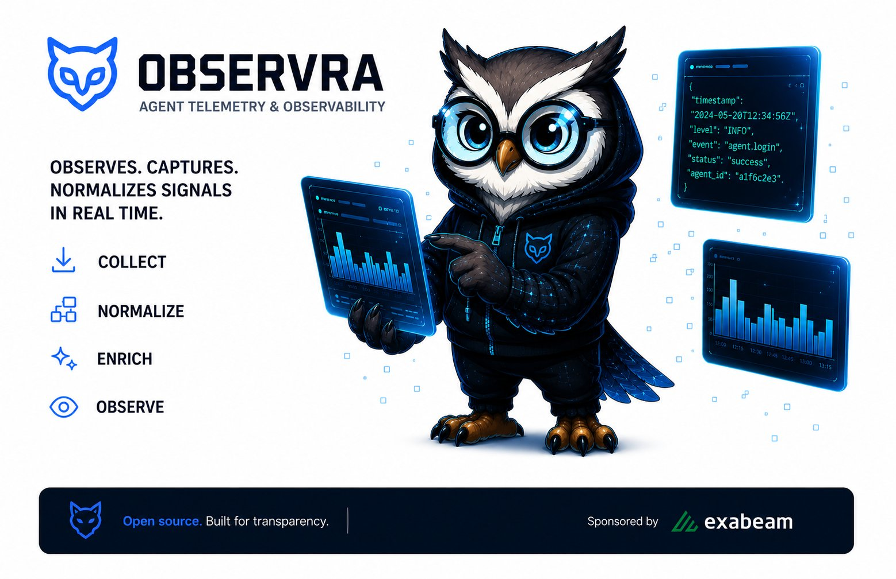

Framework-agnostic agent behavior analytics — capture every meaningful agent action: token usage, tool calls, cost, and errors — with zero custom instrumentation per agent.
Answer: "what happened, how much did it cost, and was it normal?"

System architecture
Observra instruments your agent framework through a four-stage pipeline. Each stage is independent, testable, and pluggable.
Your agent runs unmodified. ADK, Claude, OpenAI Agents, LangGraph, and Pydantic AI all emit framework callbacks automatically.
Framework-specific adapters intercept callbacks and translate them into normalized events — no per-agent code required.
CIM normalization, deduplication, PII redaction, and per-session cost calculation happen in sequence before any backend sees the event.
Enriched events are routed to JSONL, Webhook, OTel Spans, OTel Logs, or any combination via MultiBackend fan-out.
Framework support
Install only the extras you need. Each adapter is independently versioned and tested against its minimum framework version.
Key features
All built into the core SDK — no sidecar, no daemon, no infrastructure changes required.
[encryption] extra.
get_metrics() exposes drop count, queue depth, and write latency — expose via /health for alerting.
Backend layer
Every backend receives the same TelemetryEvent dataclass. Switch or combine with zero changes to your agent code.
data{} dict preserved. Works air-gapped.gen_ai.* semantic conventions.Compatible platforms
Installation & quick start
Install the base package, add the extras for your frameworks and backends, and initialize once at app startup.
Requires Python 3.10+. Base install includes JSONL, Webhook, and MultiBackend.
Only install what you need: [adk], [claude], [openai-agents], [langchain], or [pydantic-ai].
For OTel export: [otel]. For Exabeam integration: [exabeam]. Install everything: [all].
Call observra.initialize() once. The library auto-detects your framework and begins capturing events.
Rust-based log forwarder for CLI agents (Claude Code, Codex, Gemini CLI). Separate binary, zero Python dependency. github.com/ExabeamLabs/aba-sensor →
Compatibility
| Python Version | Status |
|---|---|
| 3.12 | ✓ Supported (primary) |
| 3.11 | ✓ Supported |
| 3.10 | ✓ Supported (minimum) |
| < 3.10 | ✗ Not supported |
| Framework | Min Version |
|---|---|
| Google ADK | ≥ 1.0.0 |
| Claude Agent SDK | ≥ 0.1.37 |
| OpenAI Agents SDK | ≥ 0.9.0 |
| LangChain Core | ≥ 1.0.0 |
| LangGraph | ≥ 0.2.0 |
| Pydantic AI | < 2.0.0 |
Observra runs at dev time and in production — open source, built for transparency, nothing phones home.